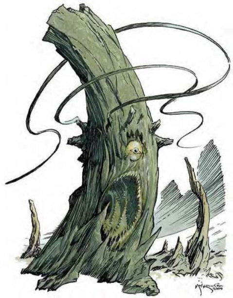

这种生物看上去像是10英尺的天然石笋，又大又深的嘴里都是水晶利齿，很明显是个食肉者。
树绳妖是潜伏在世界各地深穴中的可怕生物。他们不但邪恶，也比以貌取人的一般人想象得还更加聪明。
树绳妖高9英尺，底部粗细为半径3到4英尺，顶端则为半径1英尺，重达2200磅。体色与温度会随四周洞穴环境变化。
树绳妖通晓土族语与地底通用语。
| 资料栏位 | 树绳妖 (Roper) 大型魔法兽 |
| 生命骰 | 10d10+30 (85HP) |
| 先攻 | +5 |
| 速度 | 10英尺 (2格) |
| 防御等级 | 24 (-1体型、+1敏捷、+14天生)、接触10、措手不及23 |
| 基本攻击/擒抱 | +10 / +18 |
| 攻击 | 绳股+11远程接触 (拖曳)；或啮咬+13近战 (2d6+6) |
| 全力攻击 | 6绳股+11远程接触 (拖曳) 及 啮咬+13近战 (2d6+6) |
| 占据/触及 | 10英尺 / 10英尺 (使用绳股时50英尺) |
| 特殊攻击 | 拖曳、绳股、虚弱 |
| 特殊能力 | 黑暗视觉60英尺、对电击免疫、昏暗视觉、寒冷抗力10、法术抗力30、易受火焰伤害 |
| 豁免 | 强韧+10、反射+8、意志+8 |
| 属性 | 力量19、敏捷13、体质17、智力12、感知16、魅力12 |
| 技能 | 攀爬+12、躲藏+10*、聆听+13、侦察+13 |
| 专长 | 警觉、精通先攻、钢铁意志、专攻武器 (绳股) |
| 环境 | 地底 |
| 组织 | 单独、成双或聚集 (3-6) |
| 宝藏 | 无钱币、50%宝物 (只有石头)、无物品 |
| 阵营 | 通常混乱邪恶 |
| 进化 | 11-15HD (大型)；16-30HD (超大型) |
| 等级修正值 | ― |
树绳妖狩猎时会站着不动，伪装成岩石。这种战术让他常常伏击成功。当猎物进入可触距离后，他会用绳股袭击。近战时，则以强而有力的大嘴啮咬邻近对手。
拖曳 (特异)：绳股攻击成功后，会紧紧缠上对手。虽然不会造成伤害，但后续每轮可将对手拉近10英尺 (但不会被借机攻击)，直到该生物挣脱。挣脱须通过“脱逃”检定 (DC=23) 或力量检定 (DC=19)。检定DC的调整值与力量调整值相同，且“脱逃”检定包含+4种族加值。若有生物被拉到树绳妖旁10英尺内，则他可以在同一轮内进行啮咬攻击，攻击检定具有+4加值。
绳股生命值10，“精通击破武器”成功后即可攻击他们。但攻击绳股不会造成借机攻击。如果绳股已攀附在生物身上，则其对抗“精通击破武器”的攻击检定受到-4减值。割断绳股不会对树绳妖造成伤害。
绳股 (特异)：一旦发生遭遇，树绳妖就会先射出又长又黏的绳股。他们一次可使用6条绳股，最远可攻击到50英尺远 (没有射程单位)。如果绳股被割断，下回合树绳妖可用即时动作马上伸出新绳股。
虚弱 (超自然)：树绳妖的绳股可伤人气力。被绳股抓住的生物必须通过强韧检定 (DC=18)，否则受到2d8点力量伤害。豁免检定DC的调整值与体质调整值相同。
技能：*树绳妖在石地或冰域时，进行“躲藏”检定具有+8种族加值。